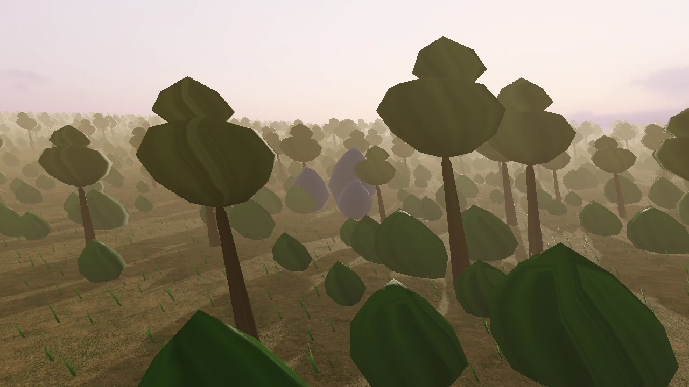

ARISEN ENGINE / 独立开发 · 持续构建
从架构设计，
到真实运行。
一套包驱动、数据优先的自研实时游戏引擎。 以 C#、C++23 和 Vulkan 连接运行时、渲染与编辑器， 这里展示实际运行结果，也讲清支撑它们的设计与工程实践。
- 架构
- 包驱动微内核
- 运行时与原生层
- C# / C++23
- 当前图形平台
- Windows / Vulkan

世界与植被流送实际运行时帧 · 非概念图
工程验证场景
以工程作品呈现 Arisen
运行结果 / 设计取舍 / 验证边界
中文优先 · 独立研发
源码暂未公开
01 / 运行结果
同一套基础，
跑出不同的场景。
从包组合到画面输出，先看已经运行起来的部分。以下画面直接来自引擎的验证输出，可打开查看完整尺寸。
这些截图说明对应场景的实际输出，不代表成品美术验收、完整物理行为证明或性能对比。功能的验证范围与仍在推进的工作分开说明。
02 / 工程特点
不止是画面，
也关心它如何运行。
Arisen 的特点不在于技术名词的数量，而在于产品组合、数据流动与资源生命周期如何连成一套可检查的系统。
包组合，而非固定内核
Workspace 与 Profile 选择包集合。构建工具解析依赖、版本与服务，生成对应产品的工程和运行清单。
包与产品并发先明确所有权
模拟发布保留的帧快照，Render Owner 消费并组织 GPU 工作；资源释放跟随实际完成状态，而非估计帧数。
线程与生命周期数据优先，按批次处理
ECS 使用连续组件存储，任务拓扑与工作记录尽量复用。托管与原生层的协作以明确合同和批处理控制边界。
运行时设计内容有完整生命周期
源资产经过 Cook 进入运行时。驻留、流送、部署目录和代际校验共同管理数据从加载到释放的过程。
资产与部署工具连接真实文档
Avalonia 编辑器承载双视口与场景、材质创作。修改、撤销重做与保存重开通过实际资产和文档路径检查。
编辑器工作流结果与证据分开看
包图检查、真实运行场景、Tracy 与 RenderDoc 各回答不同问题。通过一项门禁，不等于所有路径都已完成。
工程验证03 / 当前阶段
展示已做出的部分，
也保留真实的边界。
Arisen 仍处于独立研发阶段。这里呈现工程成果与设计方向，不把样本验证写成成熟产品保证。
能运行，也能检查
- 包图、服务与构建生成
- Vulkan、RenderGraph 与独立渲染所有者
- 资源驻留、世界／地形／植被样本
- 编辑器宿主与真实场景验证路径
把工作流连起来
- 编辑器创作与构建闭环
- 渲染调度、分析与阶段验收
- 内容生产和样本表达
- 逐篇审阅后公开技术文档
不提前承诺
- 当前以 Windows / Vulkan 为主
- 源码暂未公开，暂无公共下载版本
- 不以结构设计替代实测性能结论
- 不承诺完整商业制作能力或发布日期
DEVELOPER / 开发者
设计与实现：王靖文
个人经历、项目贡献和联系方式集中在简历页，与引擎能力介绍分开呈现。